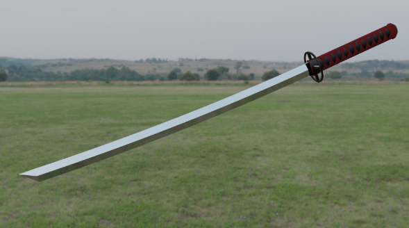

About me
I am an aspiring Game Artist wanting to be an expert in 3D modeling and texturing.
My Work

Allusions Fighting Game
Utilizing many references from video games, media, and other sources, this video was made in premier pro to mimic the similar gameplay of a fighting game.

I Love Myself
Paying homage to Kendrick Lamar's "i" song, this project was inspired by Kanye West's visual music video for his song, "All of the Lights," consisting of many flashing lyrics.

Cycles
Utilizing video effects, this video shares a narrative of someone seeing his past actions. With accurate camera angles and editing, this video demonstrates a compelling story.

Blender 3D Katana
Being one of my first 3D modeling project, this project serves as a beginner-level demonstration of my skills in 3D modeling.
Contact Me
Email: jon-jon.rodriguez@sjsu.edu